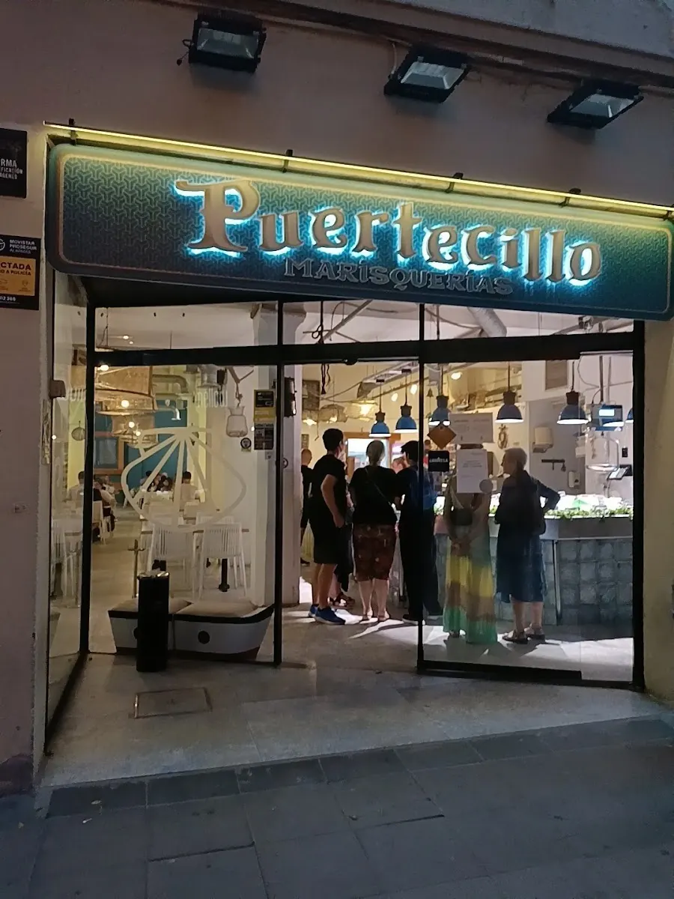

Barcelona Sants
소요 60–90분 완충 — 서류·차량 점검·주차장 출차

사그라다 파밀리아 동쪽, 파사체 데 시모(Passatge de Simó)의 좁은 길에 있는 해산물 식당이다. 메뉴판에서 요리 이름을 고르는 집이 아니라, 수산시장처럼 얼음 위에 놓인 해산물을 보고 품목과 무게를 정한 뒤 찜·구이·튀김 중 조리법을 고르는 방식이다.
성당에서 걸어 나와 바로 앉을 수 있는 거리이면서, 관광지 정면의 식당들과 달리 지역 사람들의 점심 리듬 위에 있다. 사그라다 파밀리아 방문이 오후에 잡혀 있는 날의 점심으로 동선이 가장 짧다.
이 자리는 오래 La Paradeta 였고, 지금 영업하는 곳은 Puertecillo 다. 해산물을 골라서 조리해 주는 성격은 같지만 운영 주체가 바뀌었으므로 옛 업소의 가격·운영정보는 승계하지 않는다. 예약 방식도 달라졌다 — La Paradeta 는 예약을 받지 않았지만 Puertecillo 는 공식 예약 링크와 전화를 안내한다.
| 운영시간 | 일–목 13:00–16:00 · 19:30–23:00 / 금–토 13:00–16:00 · 19:30–23:30 |
|---|---|
| 휴무 | 연중무휴 — 매일 영업 (일–목과 금–토는 야간 마감 시각만 다르다) |
| 예약 | 공식 예약 링크로 지점 선택 · 전화 +34 934 500 191 · sagradafamilia@puertecillo.es |
| 소요시간 | 60–75분 재확인 |
| 주소 | Passatge de Simó 18, 08025 Barcelona |
| 전화 | +34 934 500 191 |
| 메모 | 이 자리는 La Paradeta 가 아니라 Puertecillo Sagrada Família 다. La Paradeta 공식 사이트가 이 지점을 내렸고, Puertecillo 공식 사이트가 같은 주소를 자기 지점으로 싣는다. 해산물 마리스케리아라는 성격은 같지만 옛 업소의 가격·운영정보는 승계하지 않는다 |
| 항목 | 상세 정보 |
|---|---|
| 위치 | Passatge de Simó 18, 08025 Barcelona |
| 운영 시간 | 일–목 13:00–16:00 · 19:30–23:00 / 금–토 13:00–16:00 · 19:30–23:30 |
| 정기 휴무 | 연중무휴 — 매일 영업 (일–목과 금–토는 야간 마감 시각만 다르다) |
| 가격대 | 공개되지 않음 — 당일 중량·품목으로 정해진다 (가격 재확인) |
| 예약 | 공식 예약 링크로 지점 선택 · 전화 +34 934 500 191 · sagradafamilia@puertecillo.es |
| 접근 교통 | 메트로 L2·L5 Sagrada Família 역에서 도보 5분 |
진열대에서 품목을 고르면 무게를 달고, 조리법을 물어본 뒤 주방으로 넘어간다. 가격이 고정 접시 단위가 아니라 그날의 중량과 품목으로 정해지기 때문에, 같은 메뉴라도 날마다 총액이 달라진다.
홍합 하나, 새우 또는 langostino 하나, 오징어나 작은 생선 하나에 샐러드와 빵을 더하면 2인 한 끼가 된다. 처음부터 랍스터나 큰 생선을 고르면 예산이 빠르게 올라가므로, 진열대에서 크기와 무게를 먼저 물어보고 정한다.
상호가 바뀐 지 오래되지 않았다. 새 업소는 가격을 공개하지 않으므로 예산 범위를 미리 잡을 수 없다. 영업시간과 가격은 방문 전에 공식 채널로 다시 확인한다.
소요 60–90분 완충 — 서류·차량 점검·주차장 출차

기원전 1세기 로마 도시 바르시노의 성벽 위에 중세와 20세기 고딕 부흥이 층층이 쌓인 바르셀로나의 역사적 심장.

15세기 구 산타 크레우 고딕 병원이 카탈루냐 국립도서관으로 변모한 곳이자 가우디가 마지막 숨을 거둔 역사적 공간.

화가·작가·수집가 산티아고 루시뇰(1861–1931)이 자신의 철제 공예품과 미술 소장품을 두기 위해 만들었다.

리처드 마이어의 백색 모더니즘 건축과 세계 스케이터 문화가 공존하는 라발 지구의 현대미술관.

⚠ 9/1(화)에는 관람할 수 없다.